To update the Datacentre software, use the Updates tab in the MoneyWorks Datacentre Console application.
First, make sure that all users are logged out and that no documents are active. You can check whether documents are active by looking in the Folders tab, with the Show Active Documents option selected. Active documents will be shown with a red active indicator. Get all users to log out and wait until all documents are inactive (will take 1-2 minutes after last user logs out).
Note: You should ensure that all connected users have logged out before updating.
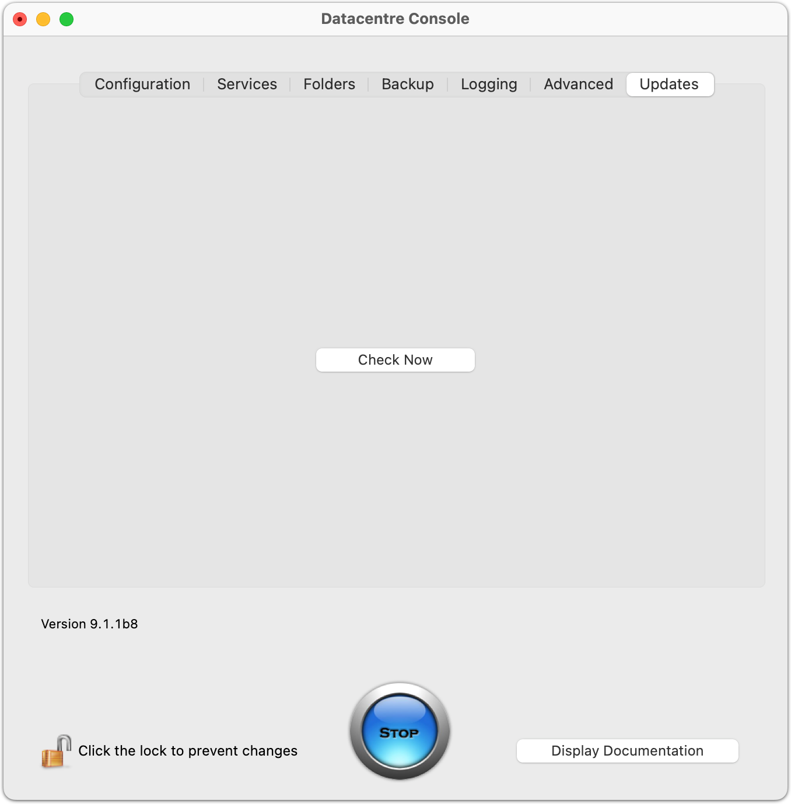
If there is an update available, it will be shown:Updates are available only if your software maintenance subscription is up to date.
On macOS, the install will just proceed; on Windows, you will see a standard installer interface. You should follow the on screen instructions.
On Windows, it is easy to run multiple instances of an application (a new one may start every time you choose the program from the Start menu—depending on the Multiple Instance preference in the MoneyWorks Preferences). If you are running more than one instance of MoneyWorks Gold on a client, and you connect to the Datacentre and it wants to update your client software, you must quit from any other instances of MoneyWorks Gold running on your machine (such as ones that have local files open), otherwise the client update cannot proceed.
Provided that the Datacentre server is on the same subnet as you, and you do not have firewalls blocking DNS-SD (Bonjour), it will appear in the Local Network Browser servers list. Select the Datacentre you want to connect to and click Log In.
If the Datacentre server is on a different subnet, you will need to connect manually.
Select Manual Using IP Address from the Connect Using popup menu, and type in the server's DNS name or IP address. Then click Log In. If the server is configured to use SSL, you must use the servers fully qualified domain name rather than its numeric IP address and you must set the SSL checkbox.
If the Datacentre server itself is configured to require log in, you will first need to type your Datacentre user name and password. If you found the server using the Local Network browser, the user name and password fields will have been enabled only if the server requires them.
A list of documents available on the server will be displayed.
From this point the login process is the same as for connecting to an ordinary MoneyWorks Gold server (see the section Connecting to a shared document in the MoneyWorks Gold User Guide).
Type your user name and password for that document
If the document is not password protected you can leave these fields blank. They will be ignored.
If you are the first user to connect to the document, the server will need to open it first, in which case there will be a slight delay while this happens.
With MoneyWorks Datacentre it is (usually) not necessary to manually invoke the Save command to permanently update the database. This is because the Datacentre will normally close any open documents once everyone has logged off (and, by default, will forcibly log them off once they have been idle for 2 hours).
With Datacentre, sufficiently privileged remote clients can manually invoke the Save and Rollback commands (you must be the only user logged in to the document to use Rollback). With MoneyWorks Gold, only the server operator can do these.
If the auto backup option is on, documents will get automatically backed up every time they close (or the Save command is used).
If a new period has been opened, the automatic backup goes into the Archives folder and is dated so that it will not get overwritten. Otherwise backups go into the Backups folder and are stamped with the day of week (1-7). Week-old backups will therefore get overwritten.
Clients can download a backup to their workstation using the Save a Backup command (provided that they have the Backup and Remote Save privileges). This means that they can also use the Accountants Export command to "export" in MoneyWorks format. A side effect of using either of these at a client is that a save and backup is forced on the server at that time. This backup will include/ exclude custom plugins for that document as requested by the client.
Your general server backup system should back up the Backups folder and Archives folder. The .mwgz backup files created by MoneyWorks are generally 20-25% the size of the original documents, thus saving space on the removable backup media, plus the DC will only have the backup files open for writing when it is actually creating them.
Tip: For super-easy off-site backups, set your Backup Path to be in a DropBox, Google Drive, or OneDrive folder.
If you want to, you can manually delete elderly items in the Archives folder if/ when you feel you no longer need them and you need the disk space.
Important: The automatic backups and archives made by the DC should be further backed-up to external removable media. At the very least, back up to a different device to protect against failure of the main storage device (hard disk). Back up to removable media and remove the media to an offsite location to protect against fire/theft. Rotate the removable media—one backup copy is not enough. All your backups should not be on-site at the same time.
Do not configure backup systems to back up the live data folder. This may interfere with the operation of the server by locking files and could lead to data loss.
Windows Services (such as MoneyWorks Datacentre) do not, by default, have access to network shares. Therefore if you want backups and archives to be written to a volume that is not locally attached to the server that Datacentre is running on, you will need to set MoneyWorks Datacentre to run as a user who has privileges to access the network volume to which you wish backups to be written.
In Services, right-click on the MoneyWorks Datacentre service, and click the Log On tab. Here you can specify a user name and password of a user that the service will run as. Note that this user must also have read/write access to the files that the Datacentre will be serving, otherwise it will of course not be able to access them.
In addition, any network paths should be specified in UNC format (\\server\ share\directory), not with a drive letter (actually drive letters set up for the user may work). Note that there is no trailing \ on the end of the path to the folder.
Warning: DO NOT keep the live data files (MoneyWorks Documents folder) on a remote network volume. This will severely impact performance and reliability.
MoneyWorks Datacentre allows you to perform all day-to-day activities with your accounts data by logging in as a client, however there will be some activities that require direct single-user access using a full-license copy of MoneyWorks Gold.
MoneyWorks Datacentre does not have a facility for creating new documents. To create a new file, use the New command in MoneyWorks Gold. We recommend that you do the bulk of the setup of a new file in single user mode. When your new set of accounts is ready for prime-time, use Upload to Server to upload it to the server.
You can develop and test new forms and reports while logged in to the Datacentre as a client.
If there is no MoneyWorks Custom Plug-Ins folder on the server, you can make a local MoneyWorks Custom Plug-Ins folder on the client using the button in Index to Reports or in the Housekeeping section of the Navigator. A folder made this way may be uploaded to the server. A corresponding folder will be created on the server if it does not already exist.
When you have completed the changes you wish to make to your forms and reports, you can upload the entire changed MoneyWorks Custom Plug-Ins folder to the server using the Upload All button in the Signing window (in Users and Security). This will replace the folder on the server with a copy of your folder.
Obviously, you require the Signing privilege to get to that command in the first place. The changes will be seen by other users next time they log in. You can also select a single file and click Upload One.
Note: If you manually change files in the Plugins folder on the server, these changes will not be seen by clients until the server closes down and starts up again (2 minutes after the last client logs out).
When you open a local document in MoneyWorks, Custom Plug-ins are normally loaded from a MoneyWorks Custom Plug-Ins folder located in the same folder as the document you open. This allows different sets of Custom Plug-Ins (reports, forms etc) to be used with different documents by putting the documents and their attendant plugins folders into different folders.
With MoneyWorks Datacentre, clients do not have direct access to the folder on the server from which documents are being served. Therefore when you log in to a document on Datacentre that has a Custom Plug-Ins folder residing in the same folder (on the server), then that Custom Plug-Ins folder will be automatically downloaded to the client workstation at login time. Note that the folder is not downloaded every time you log in—just the first time and any time thereafter if the contents of the folder on the server are changed.
Where does the downloaded Plug-Ins folder go?
The MoneyWorks Gold client will create a folder with the same name as the Datacentre (by default this is "Datacentre") in the user's Application Support folder (Application Data on Windows). Inside this folder it will place any downloaded Custom Plug-Ins folder(s). If the document that you log in to on the server resides in a subfolder of the MoneyWorks Documents folder on the server, and has a Custom Plug-Ins folder in that subfolder, then the client will create a subfolder of the same name within it's own Datacentre folder and put the Custom Plug-Ins folder there. Thus you can maintain separate Custom Plug- Ins folders for every document if you wish. Also, portable clients who might log in to more than one Datacentre server will be able to keep the plugins for
different Datacentres separate, provided the Datacentres have unique server names.
In the diagram below, you can see how the Custom Plug-Ins folders are replicated from the server to the client. When a client is using Document One or Document Two, plugins folder A will be used. When using Other Document, plugins folder B will be used.
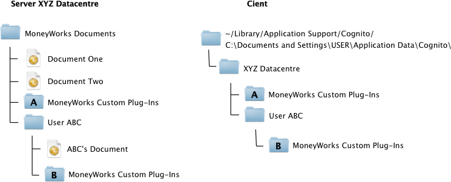
If any files are changed in plugins folder B on the server, it will be replicated to
If you need to remove the Datacentre server from a computer, this may be done from the command line.
In Terminal.app, type (without line breaks):
sudo /Applications/MoneyWorks\ Datacentre\ Console.app/Contents/
Resources/uninstall
You will be asked for the admin password. This unix shell script will stop the server and delete the following items:
/Library/LaunchDaemons/nz.co.cognito.moneyworks.datacentre.plist
/Applications/MoneyWorks Datacentre Console.app
Note: The /Library/MoneyWorks folder is not deleted. You may delete this manually using Admin privileges, or to delete this folder and all of its contents
moneyworks_server
sudo /Applications/MoneyWorks\ Datacentre\ Console.app/Contents/
Resources/uninstall -k
clients the next time they log in to ABC’s Document. Note, however, that if files are deleted from the plugins folder on the server, they will not be deleted on the client.
Standard Plugins are loaded from the folder "MoneyWorks Standard Plug-Ins" that is also expected to be in the Application Support/AppData directory (MoneyWorks recreates this folder is it is not found).
and remove the
user from the system, use:
Non-MoneyWorks Gold files
MoneyWorks Datacentre will share MoneyWorks Gold, MoneyWorks Express or MoneyWorks Cashbook documents. Note that using product features not supported by Cashbook or Express will make documents no-longer openable in those products (e.g. using Inventory or Departments).
Use the Add/Remove programs facility
Since it is “always on”, it is possible to connect to a MoneyWorks Datacentre server over the Internet. Performance will be somewhat dependent on the latency (round-trip message time a.k.a. ping-time) which on the public internet is typically up to 100 times higher than a local area network.
If you install the server on a computer in your office, you will need a static IP address for your connection. Talk to your ISP about this. They should be able to tell you what your IP number is. A domain name for the IP is not required unless you wish to use SSL.
Depending on their ISP, remote clients who want to connect may also need static IPs. Some ISPs rotate dynamic IPs very frequently (e.g. every 30 minutes). This has the effect of hanging any open connections.
Alternatively, you can install the server on a hosted Virtual Private Server or a colocated server. These always provide static IPs, and will generally provide remote desktop access and a control panel for setting up port forwarding, thus the setup will essentially be the same as for an on-premise server.
If your Internet router performs Network Address Translation or has a firewall, you will need to configure it to allow the following ports to be forwarded to the server running MoneyWorks Datacentre:
Port Purpose
6674-6698 Data Ports. One port for each data file that is active 6699 The MoneyWorks Datacentre service port
6700 The MoneyWorks Datacentre software update http service 6710 REST API port plus web apps
For simplicity, you should forward the entire range of ports 6674-6710.
The Datacentre ports can also be configured in the Datacentre Console. You should only adjust the port settings if you have a conflict with other server software running on the same computer.
For best performance over the Internet, a VDSL2 or Fibre connection or equivalent is strongly recommended (cellular or satellite connections will be higher latency). And the server should be located geographically close to the clients that will connect to it (locating your servr in another country will not
provide responsive performance).
Be sure to turn on the *Run on Server if possible* option in the Report Prefs of your custom reports. Note that reports that operate on a selection of records need to take measures to pass the selection to the server. All standard reports do this.
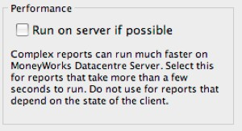
If your server is accessible over the public internet, we recommend that you enable encryption (SSL/TLS). This requires an SSL certificate, obtained from a certificate authority. You can use the same SSL certificate for native and REST service.
Often in business you purchase or sell the same product items or services over and over again. The MoneyWorks product/inventory system can help this.
An item is anything that you buy or sell on a regular basis. It may be something intangible, such as consulting services, or an actual physical product, such as a magazine. There are several different ways that items can be used, and an organisation may use some, all or none of these.
Consumables These are items that you purchase, but they are intended for (more or less) immediate consumption. This includes items such as electricity, photocopy paper, office supplies etc. When you purchase consumables, they are normally treated as an expense.
Saleables These are things which you sell. Sometimes you might sell an item (such as courier tickets), or it might be a service that you provide (consulting). In either case, these are normally treated as income items.
Counted Items These are items for which you just want to maintain a running count, so when you purchase three the count increases by three, and when you sell one it decreases by one. This is a very simple form of inventory, but without the inventory accounting.
Inventory Items These are items that you make or purchase and hold in inventory. Not only does MoneyWorks maintain a count of the items you have in stock (as for counted items), but it also maintains the value of these items. Crucially the fundamental accounting for inventoried items is different: when these items are in stock they are normally treated as assets, and only when sold will they be expensed.
If you keep inventoried items in several locations (for example, multiple branches or warehouses, or even as consignment stock), then you should consider using Location tracking.
Some inventory items, such as computers or phones, might also have serial numbers that you want to track, and others, like drugs (hopefully the good kind) or carpet, might have batch numbers and even expiry dates.
For more information see Locations, Serial Numbers and Batches.
In MoneyWorks you can create these kinds of products and then use them in your normal accounting transactions. You can also use the Enquiries and Analysis features of MoneyWorks to determine what happened to these items (for example, which customers purchased which items).
Before you can use the item features of MoneyWorks, you need to define your items. At the least, each item requires a code, and it will probably also have a description. Depending upon what you want to do with the item (i.e. buy it, sell it and/or count or stock it) certain other information is also required. Included in this other information are the general ledger codes which MoneyWorks will use to account for transactions involving the item.
To display the item file:
The Items list window will be displayed.
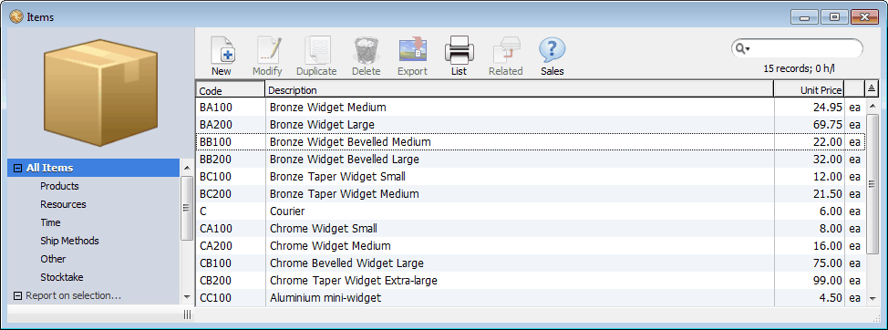
The item file has views for the five different classes of product:
Products: This is the general case, and items under here can be bought, sold, inventoried and/or manufactured.
Resources: You can sell and/or buy resources, but not stock or manufacture them. Resources that are sold but not bought can have a standard cost.
Time: This is intended for the various types of time that you sell. Items used from here in the job costing will be flagged as time items in the appropriate reports.
Ship Methods: Ship methods are the standard methods by which you send or receive goods, and hence are items that can be bought or sold (but not inventoried). These are used in the freight lines of the order entry system.
Other: For (non-inventoried) items that you don’t want to appear in the previous tabs.
A sixth view (Stocktake) allows you to easily manage the physical stock count.
Item records can be created from the item list, or “on the fly” by clicking the
New button on the Item Choices list. The item entry screen is a tabbed window:
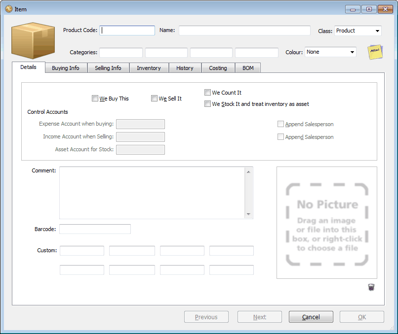
This can be up to 31 characters long. It may not contain spaces and it must be unique.
Comments on Invoices: Codes that start with an asterisk (“*”) are handled specially by the forms (purchase orders, invoices etc) provided with MoneyWorks. Specifically their code, quantity and price will not be printed, allowing you to have comments on your forms.
This can be up to 255 characters long. It is transferred to the description in the transaction detail line when the item is used.
This determines whether the item can be inventoried or manufactured, whether it can be used in the freight section of the order entry system, or will be flagged as “time” in job costing.
The class can be altered later, with the proviso that it can only be changed from a product to another class if it is not inventoried.
You can have up to four categories for each item. These are useful for searching, and are also used in the Analysis facility.
The categories can each contain fifteen characters.
It is a good idea to ensure that like categories are put into the same field. For example, if you are selling clothing, you might use category one for the size, category two for the colour and so forth.
The Details tab (shown previously) allows you to specify information about how you use the item (e.g. you only buy it, you sell it or whatever). In addition you can provide general comments (up to 1020 characters) about the item, and there are eight custom fields available for your own use (the first two can contain up to 255 characters, the others up to 15).
Tip: If you are using forms designed with the Forms Designer, you can store long descriptions of each item in the comments field and use the “Lookup” function to insert it into your invoice when it is printed. In this way your MoneyWorks file will not be made large by storing redundant item descriptions.
If you purchase an item, the We Buy This check box must be checked and a general ledger code provided against which the purchases can be charged (it should be an expense account). You must do this if you want to use the item in a purchase order, cash payment or creditor transaction. In addition, you can enter optional information about the supplier and pricing of the item.
Click the We Buy This check box if you purchase this item
price and the sales (income) general ledger code.
The Income Account When Selling (the Sales control account) is enabled.
This must be an existing account, and should be of type Income. It can be departmentalised. If you use the Append Salesperson option, the information in the Salesperson field of the transaction will be automatically appended (as a department) to the account code when the item is sold.
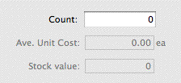
You can also set the selling price(s) for items that are sold.If you count the item: If you want to count the item, you need to set the We Count It check box. If this option is on, MoneyWorks will maintain a simple count of the item.
The Expense Account when Buying field will be activated.
The Count field
This control account is automatically used when you generate a purchase (a cash payment or a creditor invoice) for the item. It can be departmentalised. If the “Append Salesperson” option is set, the information in the salesperson field of the transaction is automatically appended (as a department) to the account code1. This is useful if you want to monitor transactions by salesperson —see Using Products with Departments. You should have a complete understanding of how this option operates before using it.
You can also set the expected purchase price and the usual supplier for items that are purchased. The purchase price will be automatically updated any time you buy the item.
If you sell the item: If you sell the item, the We Sell It check box must be set—you must do this if you are going to use the item in a cash receipt, debtor invoice or sales order. Whenever you sell an item, you generate income. Thus if you are going to sell the item you need to specify the selling
MoneyWorks will maintain a running total (visible and alterable in the item’s Inventory tab) of the quantity that you have. When you purchase an item the total will increase (normally by one, but possibly by a different quantity if the item has a Unit Conversion), and when you sell an item, the total will decrease by one.
This form of item counting is fairly “loose”. You can turn it on or off at any time, and alter the counted balance (in the Inventory tab). Unlike full inventory, counted items will be expensed on purchase and not appear on the balance sheet (unless an asset/liability account is used as the buying/ selling account). No audit trails of counted items is maintained.
Note: the two options We Count It and We Stock it and treat inventory as an asset are mutually exclusive: only one can be set for an item. If you want to change from counting to full inventory, you will need to turn off the We Count it, and then turn on the We Stock it.
If you stock the item: If you stock (i.e. maintain full inventory accounting) the item, you need to set the We Stock It check box. If this option is on, MoneyWorks will maintain an inventory level and average costing for the
item—you can only turn this option on if the class of the item is set to Product.
If you stock the item, set the We Stock It option
If you buy this item as well as stock it, you will purchase it into a current asset account (as opposed to an expense account).
If you sell this item as well as stock it, you will need to specify a cost of goods account. When you generate a sales transaction, MoneyWorks will automatically transfer the item from the stock account (which is an asset) into the cost of goods account (which is an expense account),
If you turn on this option after turning off the We Count it option, MoneyWorks will offer to do a stock creation journal to bring the counted total into stock when you click OK on the item record.
Enter the appropriate general ledger code into the Asset Account for Stock
This must be a current asset account. The account can be departmentalised, but you need to specify the account-department code here as there is no option to append the department code at transaction entry time.
Note: If you turn on the We Stock it ... option after turning off the We Count it option when the count was non-zero, MoneyWorks will offer to do a stock journal to bring the counted total into stock when you click OK on the item record.
Similarly if you turn off the We Stock it... option when the stock on hand is non-zero, MoneyWorks will need to do a stock journal to bring the stock on hand value to zero.
In both cases you will be presented with the following dialog:
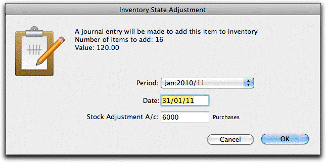
This indicates the quantity of the item and the value that will be created or written off. The Stock Adjustment account is normally the cost of goods sold account for the item. You must accept this journal to be able to turn inventory on or off.
Item’s Barcode: You can store the barcode (or alternate product code) for the item in the Barcode field—this can be up to 19 characters long. Barcodes can be printed on forms and reports in either EAN13 (UPC) or Code128.
The barcode can be used as an alternate product code when you are entering transactions, provided it does not conflict with an existing item code. When an entry is made into the code field of a transaction, the item codes are checked to see if the entry matches; if no match is found the barcodes are checked. If a match is found, the entered barcode is replaced by the item code. If more than one match is found, the item choices window is displayed with just the items that have the same barcode.
You can add an image of an item if you wish. These can be displayed on invoices and reports, such as the item Catalogue report. To add a picture:
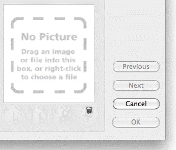
The File Open dialog will be displayed
MoneyWorks will create an image based on that in the file you selected. The image will be resampled and recompressed to an optimal size2, and saved into your custom plug-ins folder (and for networked versions, uploaded to the MoneyWorks server)3. The image will be displayed in the product window.
You can also just drag the image file and drop it into the picture box area To delete the image:
The previously copied image file will be permanently deleted if you click the
OK or Next button.
Note: Dragging the picture out of the item window will drag a copy of the picture only (and not delete it).
Information about the purchase of an item is specified in the buying info tab. This information includes the price and supplier details.
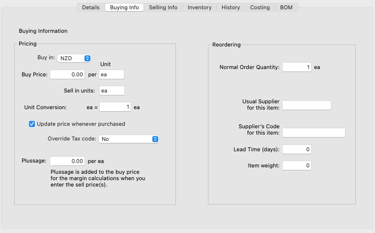
Enter the normal purchase price into the Buy Price fieldThis is the amount for which you will normally purchase the item. It should not include freight, duties or other costs which are accounted for separately. It can have up to four decimal places.
Note: If you are using more than one currency, you can select the currency of the purchase price from the Buy in currency pop-up menu.
Note: Unless you have turned the Update Price Whenever Purchased option off, the buy price and currency will be automatically updated by the system to reflect the last undiscounted buy price whenever the item is purchased.
The units might be “Kg” for kilogram, “ea” for each and so forth.
If you both buy and sell the item, the units in which you purchase may be different from the units in which you sell. You can use the conversion factor to convert the units from buying to selling. This will affect the margin calculation.
Enter the conversion factor if required
This can have up to four decimal places. As an example, if you buy in kilograms and sell in grams, the conversion factor will be 1000 (i.e. the number of sell units that is a single buy unit yields).
Note: For inventoried products, the stock-on-hand is always recorded in selling units. This conversion will happen when you buy the stock.
Update Price Whenever Purchased: Turn this option off if you do not want the last buy price to be updated whenever you purchase this item.
Override Tax code: By default, when you purchase the item, the tax (GST/VAT etc) will be calculated based on the tax code associated with the general ledger code of the purchase account. You can force a different tax code by setting the tax override to a specific tax code. Note that this setting is subservient to any tax override associated with the supplier.
The buy price represents your normal purchase price. However there may be additional costs, such as freight or labour, that you want included into your cost for calculating margins.
You can store this additional cost in the Plussage field. This is not an accounting cost (the actual charges will be accounted for elsewhere), but is added to your purchase price for the margin calculations when you enter the sell price(s).
This can be up to four decimal digits.
If you buy the item, you can optionally record your main supplier and their product code if you want. This will appear on the reorder reminder message and is used in the Reorder Products command —see Batch Reordering. You can also access this information from the Report Writer and Forms Designer if you are designing a purchase order.
This is the number of the item that you would normally purchase.
Enter the supplier code into the Usual Supplier field
The code must be that of an existing supplier.
Enter the supplier’s product code into the Supplier’s Code field
This can be up to 19 characters long, and is the code that the supplier uses. You can use the “Lookup” function in the Forms Designer to find this code in purchase orders.
Use this information to help you manage your stock ordering
You can use this to calculate shipping weights on purchase orders. The actual units (kg, lbs, methuselahs4 etc) are up to you, but you should maintain consistency otherwise you will be adding methuselahs to jeroboams, which would put you in a right pickle.
The sell prices for the item are maintained under this tab. MoneyWorks supports single sell prices, multiple pricing based on the customer type, and quantity discounts.
Override Tax code: By default, when you sell the item, the tax (GST/VAT etc) will be calculated based on the tax code associated with the general ledger code of the sales account. You can force a different tax code on the sale by setting the tax override to a specific tax code. For example if you are in Australia and this particular item is GST Free, you would set the tax override to "F". Note that this setting is subservient to any tax override associated with the customer.
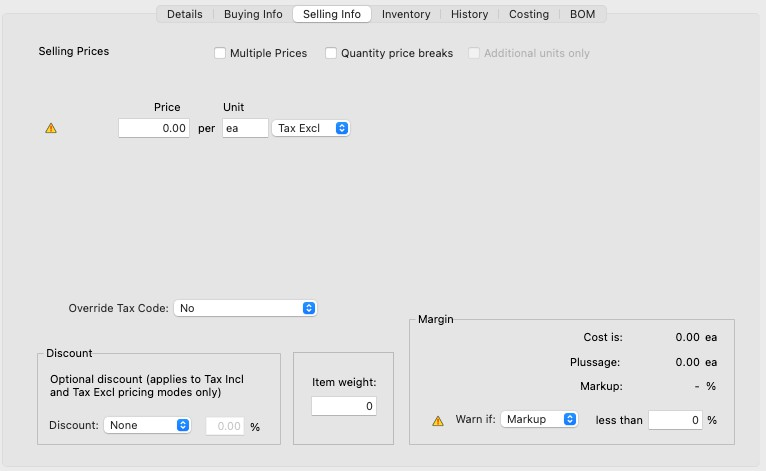
If you offer discounts for items sold, these can be calculated in one of three ways (or you can set the D, E, or F sell price to be a discount, as explained later):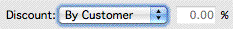
By Customer Use the customer discount from the debtor’s record;
With single pricing, there is only one selling price. This can be further discounted according to the discount settings.
By Product Use the information in the discount field of the item;
Add Add the product and customer discounts.
Set the discount pop-up menu to apply additional customer or product specific discounts.
This is the amount that will automatically be placed in the Unit Price field of any debtor invoices, cash receipts or sales orders that you generate for the item. You can enter up to four decimal places. Note that, unless otherwise specified, this is a GST/VAT/Tax exclusive price.
You should only need to do this if you sell items retail and their GST inclusive retail price results in an irrational exclusive price (e.g. it is impossible to represent accurately the Tax inclusive amount $13.00 as a Tax exclusive figure at 12.5% Tax rate).
This can be up to three characters long, and represents the units (e.g. kg, ea) in which you sell the item. This is the same Sell Unit field as on the Buying Info panel—if you don’t buy the item, you should set it here.
This determines how the default discount rate is calculated when the item is used in a sales transaction.
This is only used if the discount type is set to Product or Add.
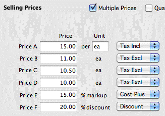
Multiple PricesSet the Multiple Prices option if you have different types of customer who each have a different price structure.
The price names (Price A, Price B etc) can be changed in the Fields tab of the Document Preferences.
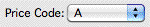
The sell price used in a transaction or job sheet entry is determined by the Price Code setting in the customerIf you set the Additional units only check box, the quantity break pricing is applied to only the additional units sold. This means that in the above example, if a Price A customer purchased 13 items, she would pay $30 for the first 10, then $28 for the next 3. If she purchased 40 items, she would pay $30 for the first 10, $28 for the next 10, and $24 for the remainder (a total of $1080, or $27
The prices are not in any particular currency. If you want (say) your E prices to be in Euros, change the field name to Euro and ensure that any customers in the Euro zone have their Price Code set to E.
Prices codes D, E and F can be set to either Cost Plus or Discount percentage amounts (or an absolute dollar amount) by changing the associated pop-up menu.
A Cost Plus sell price is calculated by adding the specified percent to the last buy price at the time the transaction is entered.
A Discount sell price is calculated by subtracting the specified percentage from the A Sell price at the time the transaction is entered.
The Price Code setting in the customer record determines the price.
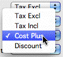
per unit). In this situation MoneyWorks puts the weighted average price ($27)
into the detail line of the transaction as the unit price. To set the quantity price breaks
Turn the Quantity price breaks option on
The #Units field will become visible
Price fields for Price Levels A and B will become visible, as will another
#Units field (for the next price break).
Discounts set in the discount section apply only to prices that are not set to
Cost Plus or Discount.
The A and B price levels can also have up to five different price levels dependent upon the quantity purchased. This is activated by turning on the Quantity Price Breaks option.
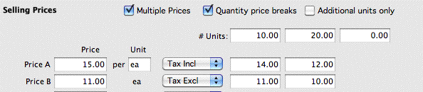
In the example above, if I am a Price A customer and I purchase 10 or more of the item, I will pay $14 for each one, not $15. If I purchase 20 or more items, I will pay $12 each. B Customers must purchase 20 units to get a special price.
If there are additional price breaks, enter another quantity in the next
#Units field and repeat
You can have up to four quantities specified. If you want to have fewer price breaks, leave the last quantity field at zero.
Turn on the Additional units only option if you want the pricing to apply only on the additional units sold
A few points to bear in mind:
The quantities specified in the #Units field should be increasing in value from left to right;
The quantity break is applied based on an individual detail line in the order or invoice. It is not cumulative over the entire transaction, nor over previous sales to the customer;
Any discounts specified by the Discounts field will be applied to the price break prices;
You can override the pricing at the time of transaction entry.
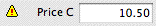
Margins and MarkupsThe Margin section allows you to look at the margin or markup of the sell prices, and flag those that are below a
The weight of the item being sold. The units are not specified, but you should ensure they are consistent across items if you want to add them for shipping purposes.
specified threshold.
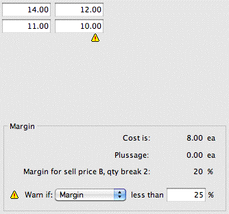
For the margin/markup calculations, the following applies:
Selling prices below the designated markup or margin percentage are flagged.
The Inventory tab provides information about items that are inventoried, including location and serial numbers and batches.
Note: For items that are only counted, the count is displayed instead of Stock on Hand.
The Count
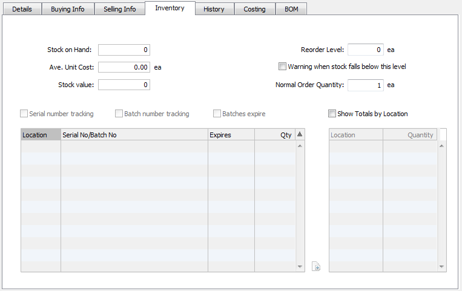
value is modifiable by the user, whereas the Stock on Hand requires an accounting transaction to be modified.Purchase Price = Buy Price + Plussage
Sell Price = Specified Sell Price - Product Discount Margin = (Sell Price - Purchase Price) / Sell Price Markup = (Sell Price - Purchase Price) / Purchase Price
If the Tax Incl option is set, the Specified Sell Price is adjusted by the GST/VAT/ TAX amount in the nominated sell price.
Note: Prices are assumed to be in local currency for these calculations. If the Buy Price is specified in a different currency, the standard cost is used (this is the based on the last time the buy price was updated, at the then exchange rate).
The Stock on Hand, Average Unit Cost and Stock Value fields display the current inventory status for the item. These are maintained by MoneyWorks and cannot be altered—they are automatically updated whenever a stocked item is
purchased or sold. You can adjust the stock levels by using stock creation and write-off journals, and you can revalue stock by using a stock revaluation journal.
Set the Reorder Level if required
This is the point at which you like to reorder stock.
Set the Warning when stock falls below this level check box if you want to be alerted when your stock is getting low
Set the Normal Order Qty
Any orders creates using the Reorder command —see Batch Reordering will be made in multiples of this. This field is a repeat of the one on the Buying Info tab. If you manufacture the item, it is called Normal Build Qty
MoneyWorks can manage serial and batch numbers for inventoried items such as computers or medicines. Provided you have turned on this capability in the Document Preferences, you can enable serial/batch tracking for individual products. See Locations, Serial Numbers and Batches for more information.
If you want to track the serial numbers on this product, set the Serial number tracking option
If this product comes in batches that need tracking, set the Batch number tracking option
If the batches have expiry dates that need monitoring, set the Batches expire option
A transaction history for the product is available under the History tab.
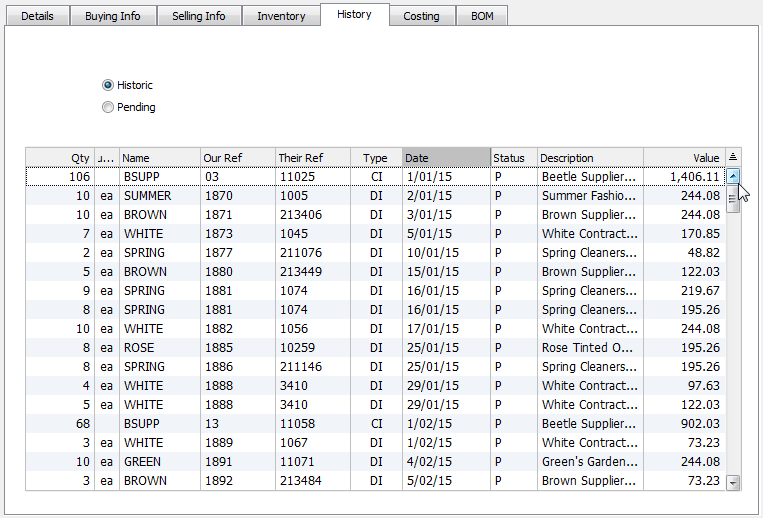
There are two views:
History: A list of posted transactions concerning the item;
Pending: Shows the stock status and outstanding orders.
Include Unposted: If set, the Effective Stock calculation in the Pending view includes the effect of any unposted transactions.
Note: On large data files, there is an option Enable this panel (large data set may be slow). If it is taking a long time to see your history, turn this option off.
The costing tab is used to set the parameters that should be used with the product when using job costing.
If the product is purchased, the Standard Cost field will display the discounted price per buy unit (converted to local currency if necessary) of the last purchase of the product.
The BOM tab contains information on the components that make up an item that is manufactured.
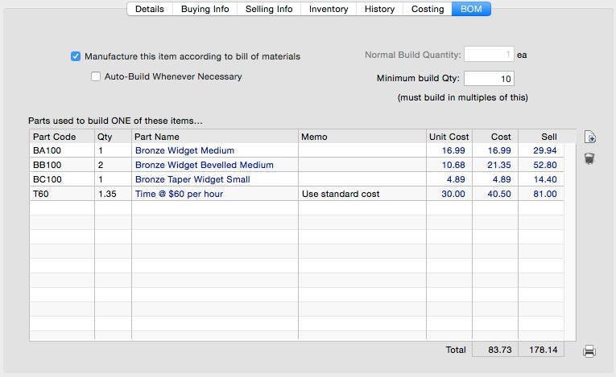